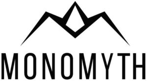

Trade Mark Journal No.2026/003 16 January 2026
WO0000001878978 (25)
Office of origin: United States of America
Date of International Registration:1 August 2025
Date of designation in the UK:
1 August 2025

The mark consists of the word "MONOMYTH" in all capital stylized letters. Above "MONOMYTH," there is a stylized design element resembling a mountain peak with three pointed peaks, creating an abstract crown shape. The central peak includes a diamond-shaped opening at its apex.
- Class 25
- Beanies; hats; leggings; socks; sweatshirts; athletic tops and bottoms for soccer or football players, basketball players, american football players, baseball players, hockey players, rugby players, volleyball players, cricket players, softball players, lacrosse players, basketball players, handball players, water polo players, sailors, beach volleyball players, squash players, racquetball players, track and field athletes, swimmers, tennis players, golfers, boxers, mma fighters, wrestlers, gymnasts, cyclists, triathletes, bowlers, sumo wrestlers, surfers, rowers, kayakers/canoeists, skiers, snowboarders, ice skaters, bobsledders, luge athletes, curlers, ski jumpers, figure skaters, speed skaters, short track speed skaters, downhill skiers, biathletes, skeleton racers, judokas, karate practitioners, taekwondo practitioners, badminton players, squash players, tennis players, paddle ball players, paddle tennis players, table tennis players, cheerleaders, dancers, weightlifters, bodybuilders, fencers, equestrians, archers, race car drivers, fisherman, decathletes, wrist wrestlers, runners, yogis, video gamers; shorts for infants, babies, toddlers, children, youths, adults, women, men; t-shirts for infants, babies, toddlers, children, youths, adults, women, men; tank tops; visors being headwear; baseball caps and hats; caps with visors; graphic t-shirts; hooded sweatshirts for infants, babies, toddlers, children, youths, adults, women, men; short-sleeved or long-sleeved t-shirts; sports caps and hats.
Monomyth, LLC